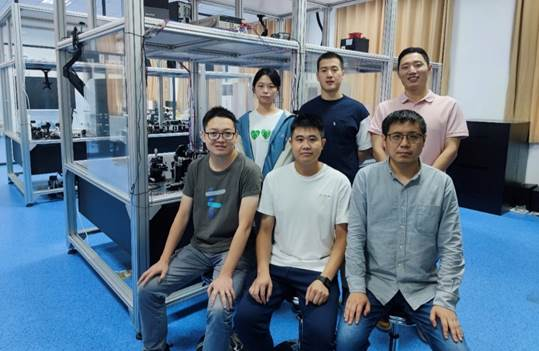

He-Liang Huang (黄合良)
Email / Google Scholar / Researchgate / Baidu 百度百科 / 快懂百科 / 搜狗百科
News
Research Interests
See our review | Variational quantum algorithms: Quantum GAN, QCNN | Quantum error mitigation: Compression readout | Classical simulation: Tensor network states algorithm, ACM Gordon Bell Prize: Closing the "quantum supremacy" gap
See our review: Superconducting quantum computing, Linear optical quantum computing | Quantum computational advantage on Zuchongzhi processor: 56-qubit 20-cycle, 60-qubit 24-cycle | Ten-photon entanglement | 18-qubit entanglement
d=3 surface code | Logical qubit teleportation | Nine-qubit planar code
Quantum Machine Learning: Quantum-inspired SVM, Topological Data Analysis | Secure Cloud Quantum Computing: Blind quantum computing
Group Members
Publications
(*Corresponding Author, #Contributed Equally.)
2024:
- He-Liang Huang*, Youwei Zhao, Chu Guo, How to Design a Classically Difficult Random Quantum Circuit for Quantum Computational Advantage Experiments, Intelligent Computing 3, 0079 (2024)
- Chen Ding, Edwin Peter Lobo, Mir Alimuddin, Xiao-Yue Xu, Shuo Zhang, Manik Banik, Wan-Su Bao, He-Liang Huang*, Quantum Advantage: A Single Qubit's Experimental Edge in Classical Data Storage, arXiv:2403.02659 (2024)
2023:
- Chong Ying, Bin Cheng, Youwei Zhao, He-Liang Huang*, Yu-Ning Zhang, Ming Gong, Yulin Wu, Shiyu Wang, Futian Liang, Jin Lin, Yu Xu, Hui Deng, Hao Rong, Cheng-Zhi Peng, Man-Hong Yung, Xiaobo Zhu, Jian-Wei Pan, Experimental Simulation of Larger Quantum Circuits with Fewer Superconducting Qubits, Physical Review Letters 130, 110601 (2023)
- Chen Ding, Yun-Fei Niu, Wan-Su Bao, He-Liang Huang*, Noise-Resistant Quantum State Compression Readout, Science China Physics, Mechanics & Astronomy 66, 230311 (2023)
- Ming Gong#, He-Liang Huang# (#These two authors contributed equally), Shiyu Wang, Chu Guo, Shaowei Li, Yulin Wu, Qingling Zhu, Youwei Zhao, Shaojun Guo, Haoran Qian, Yangsen Ye, Chen Zha, Fusheng Chen, Chong Ying, Jiale Yu, Daojin Fan, Dachao Wu, Hong Su, Hui Deng, Hao Rong, Kaili Zhang, Sirui Cao, Jin Lin, Yu Xu, Lihua Sun, Cheng Guo, Na Li, Futian Liang, Akitada Sakurai, Kae Nemoto, W. J. Munro, Yong-Heng Huo, Chao-Yang Lu, Cheng-Zhi Peng, Xiaobo Zhu, Jian-Wei Pan, Quantum Neuronal Sensing of Quantum Many-Body States on a 61-Qubit Programmable Superconducting Processor, Science Bulletin 68 (9), 906-912 (2023).
- He-Liang Huang*, Xiao-Yue Xu, Chu Guo, Guojing Tian, Shi-Jie Wei, Xiaoming Sun, Wan-Su Bao, Gui-Lu Long, Near-term quantum computing techniques: Variational quantum algorithms, error mitigation, circuit compilation, benchmarking and classical simulation, Science China Physics, Mechanics & Astronomy 66, 250302 (2023)
- Yun-Fei Niu, Shuo Zhang, Chen Ding, Wan-Su Bao, He-Liang Huang*, Parameter-Parallel Distributed Variational Quantum Algorithm, SciPost Physics 14 (5), 132(2023)
- Chen Ding, Xiao-Yue Xu, Yun-Fei Niu, Shuo Zhang, He-Liang Huang*, Wan-Su Bao, Active Learning on a Programmable Photonic Quantum Processor, Quantum Science and Technology 8, 035030(2023)
- Sirui Cao, Bujiao Wu, Fusheng Chen, Ming Gong, Yulin Wu, Yangsen Ye, Chen Zha, Haoran Qian, Chong Ying, Shaojun Guo, Qingling Zhu, He-Liang Huang, Youwei Zhao, Shaowei Li, Shiyu Wang, Jiale Yu, Daojin Fan, Dachao Wu, Hong Su, Hui Deng, Hao Rong, Yuan Li, Kaili Zhang, Tung-Hsun Chung, Futian Liang, Jin Lin, Yu Xu, Lihua Sun, Cheng Guo, Na Li, Yong-Heng Huo, Cheng-Zhi Peng, Chao-Yang Lu, Xiao Yuan, Xiaobo Zhu, Jian-Wei Pan, Generation of genuine entanglement up to 51 superconducting qubits, Nature 619 (7971), 738-742 (2023)
- Yangsen Ye#, Tan He#, He-Liang Huang#(#These three authors contributed equally), Zuolin Wei, Yiming Zhang, Youwei Zhao, Dachao Wu, Qingling Zhu, Huijie Guan, Sirui Cao, Fusheng Chen, Tung-Hsun Chung, Hui Deng, Daojin Fan, Ming Gong, Cheng Guo, Shaojun Guo, Lianchen Han, Na Li, Shaowei Li, Yuan Li, Futian Liang, Jin Lin, Haoran Qian, Hao Rong, Hong Su, Shiyu Wang, Yulin Wu, Yu Xu, Chong Ying, Jiale Yu, Chen Zha, Kaili Zhang, Yong-Heng Huo, Chao-Yang Lu, Cheng-Zhi Peng, Xiaobo Zhu, Jian-Wei Pan, Logical magic state preparation with fidelity beyond the distillation threshold on a superconducting quantum processor, Physical Review Letters 131, 210603 (2023)
- Huijie Guan, Fei Zhou, Francisco Albarrán-Arriagada, Xi Chen, Enrique Solano, Narendra N Hegade, He-Liang Huang*, Single-Layer Digitized-Counterdiabatic Quantum Optimization for p-spin Models, arXiv:2311.06682 (2023)
- Xiao-Yue Xu, Chen Ding, Shuo Zhang, Wan-Su Bao, He-Liang Huang*, Circuit-Noise-Resilient Virtual Distillation, arXiv:2311.08183 (2023)
- Chen Ding, Xiao-Yue Xu, Shuo Zhang, Wan-Su Bao, He-Liang Huang*, Quantum State Compression Shadow, arXiv:2312.13036 (2023)
2022:
- Shaowei Li, Daojin Fan, Ming Gong, Yangsen Ye, Xiawei Chen, Yulin Wu, Huijie Guan, Hui Deng, Hao Rong, He-Liang Huang, Chen Zha, Kai Yan, Shaojun Guo, Haoran Qian, Haibin Zhang, Fusheng Chen, Qingling Zhu, Youwei Zhao, Shiyu Wang, Chong Ying, Sirui Cao, Jiale Yu, Futian Liang, Yu Xu, Jin Lin, Cheng Guo, Lihua Sun, Na Li, Lianchen Han, Cheng-Zhi Peng, Xiaobo Zhu, Jian-Wei Pan, Realization of fast all-microwave CZ gates with a tunable coupler, Chinese Physics Letters 39 (3), 030302 (2022).
- Qingling Zhu, Sirui Cao, Fusheng Chen, Ming-Cheng Chen, Xiawei Chen, Tung-Hsun Chung, Hui Deng, Yajie Du, Daojin Fan, Ming Gong, Cheng Guo, Chu Guo, Shaojun Guo, Lianchen Han, Linyin Hong, He-Liang Huang（理论工作负责人）, Yong-Heng Huo, Liping Li, Na Li, Shaowei Li, Yuan Li, Futian Liang, Chun Lin, Jin Lin, Haoran Qian, Dan Qiao, Hao Rong, Hong Su, Lihua Sun, Liangyuan Wang, Shiyu Wang, Dachao Wu, Yulin Wu, Yu Xu, Kai Yan, Weifeng Yang, Yang Yang, Yangsen Ye, Jianghan Yin, Chong Ying, Jiale Yu, Chen Zha, Cha Zhang, Haibin Zhang, Kaili Zhang, Yiming Zhang, Han Zhao, Youwei Zhao, Liang Zhou, Chao-Yang Lu, Cheng-Zhi Peng, Xiaobo Zhu, Jian-Wei Pan, Quantum Computational Advantage via 60-Qubit 24-Cycle Random Circuit Sampling, Science Bulletin 67 (3), 240-245 (2022)
- Youwei Zhao#, Yangsen Ye#, He-Liang Huang# (#These three authors contributed equally), Yiming Zhang, Dachao Wu, Huijie Guan, Qingling Zhu, Zuolin Wei, Tan He, Sirui Cao, Fusheng Chen, Tung-Hsun Chung, Hui Deng, Daojin Fan, Ming Gong, Cheng Guo, Shaojun Guo, Lianchen Han, Na Li, Shaowei Li, Yuan Li, Futian Liang, Jin Lin, Haoran Qian, Hao Rong, Hong Su, Lihua Sun, Shiyu Wang, Yulin Wu, Yu Xu, Chong Ying, Jiale Yu, Chen Zha, Kaili Zhang, Yong-Heng Huo, Chao-Yang Lu, Cheng-Zhi Peng, Xiaobo Zhu, Jian-Wei Pan, Realization of an error-correcting surface code with superconducting qubits, Physical Review Letters 129, 030501 (2022)
- Qingling Zhu, Zheng-Hang Sun, Ming Gong, Fusheng Chen, Yu-Ran Zhang, Yulin Wu, Yangsen Ye, Chen Zha, Shaowei Li, Shaojun Guo, Haoran Qian, He-Liang Huang, Jiale Yu, Hui Deng, Hao Rong, Jin Lin, Yu Xu, Lihua Sun, Cheng Guo, Na Li, Futian Liang, Cheng-Zhi Peng, Heng Fan, Xiaobo Zhu, Jian-Wei Pan, Observation of thermalization and information scrambling in a superconducting quantum processor, Physical Review Letters 128, 160502 (2022)
- Chen Ding, Xiao-Yue Xu, Shuo Zhang, He-Liang Huang*, Wan-Su Bao, Evaluating the Resilience of Variational Quantum Algorithms to Leakage Noise, Physical Review A 106 (4), 042421 (2022)
- Chen Ding, Tian-Yi Bao, He-Liang Huang*, Quantum-Inspired Support Vector Machine, IEEE Transactions on Neural Networks and Learning Systems 33(12), 7210-7222 (2022).
2021:
- Yulin Wu, Wan-Su Bao, Sirui Cao, Fusheng Chen, Ming-Cheng Chen, Xiawei Chen, Tung-Hsun Chung, Hui Deng, Yajie Du, Daojin Fan, Ming Gong, Cheng Guo, Chu Guo, Shaojun Guo, Lianchen Han, Linyin Hong, He-Liang Huang （理论工作负责人）, Yong-Heng Huo, Liping Li, Na Li, Shaowei Li, Yuan Li, Futian Liang, Chun Lin, Jin Lin, Haoran Qian, Dan Qiao, Hao Rong, Hong Su, Lihua Sun, Liangyuan Wang, Shiyu Wang, Dachao Wu, Yu Xu, Kai Yan, Weifeng Yang, Yang Yang, Yangsen Ye, Jianghan Yin, Chong Ying, Jiale Yu, Chen Zha, Cha Zhang, Haibin Zhang, Kaili Zhang, Yiming Zhang, Han Zhao, Youwei Zhao, Liang Zhou, Qingling Zhu, Chao-Yang Lu, Cheng-Zhi Peng, Xiaobo Zhu, Jian-Wei Pan, Strong quantum computational advantage using a superconducting quantum processor, Physical Review Letters 127 (18), 180501 (2021).
- He-Liang Huang, Marek Narozniak, Futian Liang, Youwei Zhao, Anthony D Castellano, Ming Gong, Yulin Wu, Jin Lin, Yu Xu, Hui Deng, Hao Rong, Jonathan P Dowling, Cheng-Zhi Peng, Tim Byrnes, Xiaobo Zhu, Jian-Wei Pan, Quantum teleportation of a spin-mapped Majorana zero mode qubit, Physical Review Letters 126, 090502 (2021).
- Chu Guo, Youwei Zhao, and He-Liang Huang*, Verifying Random Quantum Circuits with Arbitrary Geometry Using Tensor Network States Algorithm, Physical Review Letters 126, 070502 (2021).
- Ming Gong, Shiyu Wang, Chen Zha, Ming-Cheng Chen, He-Liang Huang, Yulin Wu, Qingling Zhu, Youwei Zhao, Shaowei Li, Shaojun Guo, Haoran Qian, Yangsen Ye, Fusheng Chen, Chong Ying, Jiale Yu, Daojin Fan, Dachao Wu, Hong Su, Hui Deng, Hao Rong, Kaili Zhang, Sirui Cao, Jin Lin, Yu Xu, Lihua Sun, Cheng Guo, Na Li, Futian Liang, V. M. Bastidas, Kae Nemoto, W. J. Munro, Yong-Heng Huo, Chao-Yang Lu, Cheng-Zhi Peng, Xiaobo Zhu, Jian-Wei Pan, Quantum walks on a programmable two-dimensional 62-qubit superconducting processor, Science 372 (6545), 948-952 (2021).
- Fusheng Chen, Zheng-Hang Sun, Ming Gong, Qingling Zhu, Yu-Ran Zhang, Yulin Wu, Yangsen Ye, Chen Zha, Shaowei Li, Shaojun Guo, Haoran Qian, He-Liang Huang, Jiale Yu, Hui Deng, Hao Rong, Jin Lin, Yu Xu, Lihua Sun, Cheng Guo, Na Li, Futian Liang, Cheng-Zhi Peng, Heng Fan, Xiaobo Zhu, Jian-Wei Pan, Observation of strong and weak thermalization in a superconducting quantum processor, Physical Review Letters 127 (2), 020602 (2021).
- Junhua Liu, Kwan Hui Lim, Kristin L Wood, Wei Huang, Chu Guo, He-Liang Huang*, Hybrid Quantum-Classical Convolutional Neural Networks, Science China Physics, Mechanics & Astronomy 64, 290311 (2021).
- He-Liang Huang, Yuxuan Du, Ming Gong, Youwei Zhao, Yulin Wu, Chaoyue Wang, Shaowei Li, Futian Liang, Jin Lin, Yu Xu, Rui Yang, Tongliang Liu, Min-Hsiu Hsieh, Hui Deng, Hao Rong, Cheng-Zhi Peng, Chao-Yang Lu, Yu-Ao Chen, Dacheng Tao, Xiaobo Zhu, Jian-Wei Pan, Experimental Quantum Generative Adversarial Networks for Image Generation, Physical Review Applied 16, 024051 (2021)
- Yangsen Ye, Sirui Cao, Yulin Wu, Xiawei Chen, Qingling Zhu, Shaowei Li, Fusheng Chen, Ming Gong, Chen Zha, He-Liang Huang, Youwei Zhao, Shiyu Wang, Shaojun Guo, Haoran Qian, Futian Liang, Jin Lin, Yu Xu, Cheng Guo, Lihua Sun, Na Li, Hui Deng, Xiaobo Zhu, Jian-Wei Pan, Realization of High-Fidelity Controlled-Phase Gates in Extensible Superconducting Qubits Design with a Tunable Coupler, Chinese Physics Letters 38 (10), 100301 (2021)
- The Quantum Internet: The Second Quantum Revolution, Cambridge University Press
- Yong (Alexander)Liu, Xin (Lucy)Liu, Fang (Nancy)Li, Haohuan Fu, Yuling Yang, Jiawei Song, Pengpeng Zhao, Zhen Wang, Dajia Peng, Huarong Chen, Chu Guo, Heliang Huang, Wenzhao Wu, Dexun Chen, Closing the" quantum supremacy" gap: achieving real-time simulation of a random quantum circuit using a new Sunway supercomputer, Proceedings of the International Conference for High Performance Computing, Networking, Storage and Analysis 3,12 (2021)
- Xin Liu, Chu Guo, Yong Liu, Yuling Yang, Jiawei Song, Jie Gao, Zhen Wang, Wenzhao Wu, Dajia Peng, Pengpeng Zhao, Fang Li, He-Liang Huang, Haohuan Fu, Dexun Chen, Redefining the Quantum Supremacy Baseline with a New Generation Sunway Supercomputer, arXiv:2111.01066 (2021)
2020:
- He-Liang Huang*, Dachao Wu, Daojin Fan, and Xiaobo Zhu, Superconducting Quantum Computing: A Review, Science China Information Sciences 63, 180501 (2020).
- Yong Liu, Dongyang Wang, Shichuan Xue, Anqi Huang, Xiang Fu, Xiaogang Qiang, Ping Xu, He-Liang Huang, Mingtang Deng, Chu Guo, Xuejun Yang, Junjie Wu, Variational Quantum Circuits for Quantum State Tomography, Physical Review A 101, 052316 (2020).
- Shuo Zhang, Qian-Heng Duan, Tan Li, Xiang-Qun Fu, He-Liang Huang, Xiang Wang, Wan-Su Bao, Quantum adiabatic algorithms using unitary interpolation, Chinese Physics B 29 (1), 010308 (2020).
2019:
- Ming-Cheng Chen, Chang Liu, Yi-Han Luo, He-Liang Huang, Bi-Ying Wang, Xi-Lin Wang, Li Li, Nai-Le Liu, Chao-Yang Lu, and Jian-Wei Pan. Experimental demonstration of quantum pigeonhole paradox, Proceedings of the National Academy of Sciences of the United States of America (PNAS), 116(5): 1549-1552 (2019)
- Chang Liu#, He-Liang Huang# (#These two authors contributed equally), Chao Chen, Bi-Ying Wang, Xi-Lin Wang, Tao Yang, Li Li, Nai-Le Liu, Jonathan P. Dowling, Tim Byrnes, Chao-Yang Lu, and Jian-Wei Pan. Demonstration of topologically path-independent anyonic braiding in a nine-qubit planar code, Optica 6 (3), 264-268 (2019)
- Xiang-Qun Fu, Wan-Su Bao, He-Liang Huang, Tan Li, Jian-Hong Shi, Xiang Wang, Shuo Zhang, Feng-Guang Li. Realization of t-bit semiclassical quantum Fourier transform on IBM’s quantum cloud computer, Chinese Physics B 28 (2), 020302 (2019).
- Feng-Guang Li, Wan-Su Bao, Tan Li, He-Liang Huang, Shuo Zhang, Xiang-Qun Fu, Nonadiabatic Quantum Search Algorithm with Analytical Success Rate, International Journal of Theoretical Physics 58 (3), 939-949 (2019).
- Chu Guo, Yong Liu, Min Xiong, Shichuan Xue, Xiang Fu, Anqi Huang, Xiaogang Qiang, Ping Xu, Junhua Liu, Shenggen Zheng, He-Liang Huang, Mingtang Deng, Dario Poletti, Wan-Su Bao, Junjie Wu, General-purpose quantum circuit simulator with Projected Entangled-Pair States and the quantum supremacy frontier, Physical Review Letters 123, 190501 (2019).
- He-Liang Huang, Yi-Han Luo, B Bai, YH Deng, H Wang, Q Zhao, HS Zhong, YQ Nie, WH Jiang, XL Wang, Jun Zhang, Li Li, Nai-Le Liu, Tim Byrnes, JP Dowling, Chao-Yang Lu, Jian-Wei Pan, Compatibility of causal hidden-variable theories with a delayed-choice experiment, Physical Review A 100, 012114 (2019).
- He-Liang Huang, Wan-Su Bao, and Chu Guo, Simulating the dynamics of single photons in boson sampling devices with matrix product states, Physical Review A 100, 032305 (2019).
2018:
- He-Liang Huang, Xi-Lin Wang, Peter P Rohde, Yi-Han Luo, You-Wei Zhao, Chang Liu, Li Li, Nai-Le Liu, Chao-Yang Lu, Jian-Wei Pan. Demonstration of Topological Data Analysis on a Quantum Processor, Optica, 5(2):193 (2018)
- He-Liang Huang*, Ashutosh K Goswami, Wan-Su Bao, Prasanta K Panigrahi. Demonstration of Essentiality of Entanglement in a Deutsch-like Quantum Algorithm, Science China Physics, Mechanics & Astronomy, 61(6): 060311 (2018)
- Xi-Lin Wang, Yi-Han Luo, He-Liang Huang, Ming-Cheng Chen, Zu-En Su, Chang Liu, Chao Chen, Wei Li, Yu-Qiang Fang, Xiao Jiang, Jun Zhang, Li Li, Nai-Le Liu, Chao-Yang Lu, Jian-Wei Pan. 18-qubit entanglement with six photons’ three degrees of freedom, Physical Review Letters 120 (26), 260502 (2018)
- Feng-guang Li, Wan-su Bao, Shuo Zhang, Xiang Wang, He-Liang Huang, Tan Li, Bo-wen Ma, Transitionless driving on local adiabatic quantum search algorithm, Chinese Physics B 27 (1), 010308 (2018)
- Tan Li, Shuo Zhang, He-Liang Huang, Feng-Guang Li, Xiang-Qun Fu, Xiang Wang, Wan-Su Bao, Ground state cooling in a hybrid optomechanical system with a three-level atomic ensemble, Journal of Physics B: Atomic, Molecular and Optical Physics 51 (4), 045503 (2018)
- Yi-Han Luo, Hong-Yi Su, He-Liang Huang, Xi-Lin Wang, Tao Yang, Li Li, Nai-Le Liu, Jing-Ling Chen, Chao-Yang Lu, Jian-Wei Pan, Experimental Test of Generalized Hardy’s Paradox, Science Bulletin 63 (24), 1611 (2018)
- Tan Li, Wan-Su Bao, He-Liang Huang, Feng-Guang Li, Xiang-Qun Fu, Shuo Zhang, Chu Guo, Yu-Tao Du, Xiang Wang, Jie Lin, Complementary-multiphase quantum search for all numbers of target items, Physical Review A 98, 062308 (2018)
- Feng-guang Li, Wan-Su Bao, Shuo Zhang, He-Liang Huang, Tan Li, Xiang Wang, Xiang-qun Fu, Role of coherence in adiabatic search algorithms, Physics Letters A 382 (38), 2709 (2018)
2017:
- He-Liang Huang, Qi Zhao, Xiongfeng Ma, Chang Liu, Zu-En Su, Xi-Lin Wang, Li Li, Nai-Le Liu, Barry C Sanders, Chao-Yang Lu, Jian-Wei Pan. Experimental Blind Quantum Computing for a Classical Client, Physical Review Letters, 119(5):050503 (2017)
- He-Liang Huang, Wan-Su Bao, Tan Li, Feng-Guang Li, Xiang-Qun Fu, Shuo Zhang, Hai-Long Zhang, Xiang Wang. Universal Blind Quantum Computation for Hybrid System, Quantum Information Processing, 16(8): 199 (2017)
- He-Liang Huang, Wan-Su Bao, Tan Li, Feng-Guang Li, Xiang-Qun Fu, Shuo Zhang, Hai-Long Zhang, Xiang Wang. Deterministic Linear Optical Quantum Toffoli Gate, Physics Letters A, 381(33): 2673 (2017)
- He-Liang Huang, Han-Sen Zhong, Tan Li, Feng-Guang Li, Xiang-Qun Fu, Shuo Zhang, Xiang Wang, Wan-Su Bao. Statistical Analysis for Collision-free Boson Sampling, Scientific Reports, 7(1): 15265 (2017)
- He-Liang Huang, You-Wei Zhao, Tan Li, Feng-Guang Li, Yu-Tao Du, Xiang-Qun Fu, Shuo Zhang, Xiang Wang, Wan-Su Bao. Homomorphic Encryption Experiments on IBM’s Cloud Quantum Computing Platform, Frontiers of Physics, 12(1): 120305 (2017)
- Hui Wang, Yu He, Yu-Huai Li, Zu-En Su, Bo Li, He-Liang Huang, Xing Ding, Ming-Cheng Chen, Chang Liu, Jian Qin, Jin-Peng Li, Yu-Ming He, Christian Schneider, Martin Kamp, Cheng-Zhi Peng, Sven Höfling, Chao-Yang Lu, Jian-Wei Pan. High-efficiency Multiphoton Boson Sampling, Nature Photonics, 11(6): 361 (2017)
- Zu-En Su, Yuan Li, Peter P Rohde, He-Liang Huang, Xi-Lin Wang, Li Li, Nai-Le Liu, Jonathan P Dowling, Chao-Yang Lu, Jian-Wei Pan. Multiphoton Interference in Quantum Fourier Transform Circuits and Applications to Quantum Metrology, Physical Review Letters, 119(8): 080502 (2017)
- Yu He, X Ding, Z-E Su, He-Liang Huang, J Qin, C Wang, S Unsleber, C Chen, H Wang, Y-M He, X-L Wang, W-J Zhang, S-J Chen, C Schneider, M Kamp, L-X You, Z Wang, S Höfling, Chao-Yang Lu, Jian-Wei Pan. Time-bin-encoded Boson Sampling with a Single-photon Device, Physical Review Letters, 118(19): 190501 (2017)
- 黄合良, 苏祖恩, 蔡昕东. 光量子计算的实验研究进展，信息安全研究, 3(1): 13 (2017)
2016:
- Xi-Lin Wang, Luo-Kan Chen, Wei Li, He-Liang Huang, Chang Liu, Chao Chen, Y-H Luo, Z-E Su, Dian Wu, Z-D Li, He Lu, Yi Hu, Xiao Jiang, C-Z Peng, Li Li, N-L Liu, Yu-Ao Chen, Chao-Yang Lu, Jian-Wei Pan. Experimental Ten-photon Entanglement, Physical Review Letters, 117(21): 210502 (2016)
2015:
- Wansu Bao, He-Liang Huang*, Middle-Solving Grobner bases algorithm for cryptanalysis over finite fields, arXiv:1507.03480
- He-Liang Huang, Wansu Bao, Algorithm for Solving Massively Underdefined Systems of Multivariate Quadratic Equations over Finite Fields, arXiv:1507.03674
2014:
- He-Liang Huang, Wansu Bao, Shukai Liu. Parallel Gaussian Elimination for XL-Family over GF(2), Security and Communication Networks, 7(3): 503-510 (2014)
2013:
- He-Liang Huang*, Wansu Bao, Middle-Solving F4 to Compute Grobner bases for Cryptanalysis over GF (2), arXiv:1310.2332